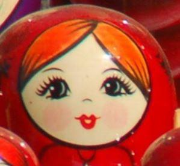

Здра́вствуйте, мои́ дороги́е ученики́ ! (Bonjour, mes chers élèves !) Вот и прошёл ещё оди́н год ! (Voici encore une année passée !) A propos, savez-vous comment dire « Bonne année ! » en russe ? On dit : « С Но́вым го́дом ! » Je vous souhaite une très bonne année ! Я вас поздравля́ю с Но́вым го́дом!
Из чего́ состои́т год? (De quoi l’année est-elle composée ?) Год состои́т из ме́сяцев. (L’année est composée de mois). Ме́сяц – un mois.
Ме́сяцы – les mois. Вот назва́ния ме́сяцев (Voici les noms des mois) : янва́рь, февра́ль, март, апре́ль, май, ию́нь, ию́ль, а́вгуст, сентя́брь, октя́брь, ноя́брь и дека́брь. Ils ressemblent aux noms des mois en français, n’est-ce pas ?
Год состои́т та́кже из времён го́да (L’année est aussi composée de saisons). Вре́мя го́да – une saison. Времена́ го́да – les saisons. Времена́ го́да – э́то зима́ (l’hiver), весна́ (le printemps), ле́то (l’été) и о́сень (l’automne). Дека́брь, янва́рь и февра́ль – зи́мние ме́сяцы (Décembre, janvier et février sont les mois hivernaux). Март, апре́ль и май – весе́нние ме́сяцы (Mars, avril et mai sont les mois printaniers). Ию́нь, ию́ль и а́вгуст – ле́тние ме́сяцы (Juin, juillet et août sont les mois estivaux). А сентя́брь, октя́брь и ноя́брь – осе́нние ме́сяцы (Et septembre, octobre et novembre sont les mois automnaux).
В Росси́и зи́ма начина́ется в пе́рвый день декабря́ (En Russie l’hiver commence le premier jour de décembre), весна́ начина́ется в пе́рвый день ма́рта (le printemps commence le premier jour de mars), ле́то начина́ется в пе́рвый день ию́ня (l’été commence le premier jour de juin), а о́сень начина́ется в пе́рвый день сентября́ (et l’automne commence le premier jour de septembre).
УПРАЖНЕ́НИЕ 1 (EXERCICE 1)
Назови́те по-ру́сски зи́мние ме́сяцы, ле́тние ме́сяцы, осе́нние ме́сяцы и весе́нние ме́сяцы (Nommez en russe les mois d’hiver, les mois d’été, les mois d’automne et les mois printaniers).
Год состои́т из ме́сяцев. (L’année est composée de mois). А из чего́ состоя́т ме́сяцы? (Et de quoi les mois sont-ils composés ?) Ме́сяцы состоя́т из неде́ль (Les mois sont composés de semaines). Неде́ля – une semaine. А из чего́ состои́т неде́ля? (Et de quoi la semaine est-elle composée ?) Неде́ля состои́т из дней неде́ли (La semaine est composée de jours de la semaine). День неде́ли – un jour de la semaine.
Дни неде́ли – les jours de la semaine. Вот назва́ния дней неде́ли (Voici les noms des jours de la semaine) : понеде́льник (lundi), вто́рник (mardi), среда́ (mercredi), четве́рг (jeudi), пя́тница (vendredi), суббо́та (samedi), воскресе́нье (dimanche).
Les noms des jours de la semaine en russe ne ressemblent pas à leurs équivalents français, car ils n’ont pas la même étymologie. Voici comment ils furent formés. Les mots вто́рник, четве́рг et пя́тница proviennent des mots второ́й (deuxième), четвёртый (quatrième) et пя́тый (cinquième). Effectivement ils se trouvent en seconde, quatrième et cinquième place dans la semaine. Le mot среда́ vient du mot середи́на (milieu), car ce jour est au milieu de 5 jours de travail. Суббо́та a la même racine que le mot hébreu Shabbat et signifie le repos. Воскресе́нье se traduit comme la résurrection, c’est le jour de la résurrection de Jésus Christ. A l’époque, dimanche ne s’appelait pas воскресе́нье mais неде́ля, tandis que pour nommer la semaine il existait le mot седми́ца. Il faut savoir que le mot неде́ля vient de не де́лать (ne pas faire), car avant de signifier la semaine, il signifiait le jour quand on ne faisait rien ou le jour de repos. Alors si vous rencontrez un russe qui ne fait rien toute la semaine, vous saurez que ce n’est pas sa faute, c’est le mot неде́ля qui l’oblige de se comporter comme ça… Donc, il nous reste la signification du mot понеде́льник qui désigne le jour après le jour de repos (по́сле неде́ли).
УПРАЖНЕ́НИЕ 2 (EXERCICE 2)
Назови́те по-ру́сски дни неде́ли (Nommez en russe les jours de la semaine). Како́й день неде́ли вы не лю́бите? (Quel jour de la semaine vous n’aimez pas ?) Како́й ваш люби́мый день неде́ли? (Quel est votre jour de la semaine préféré ?)
Si vous ne vous rappelez pas quel jour de la semaine ou quel mois vous êtes, vous pouvez vous renseigner de la manière suivante : Како́й сего́дня день неде́ли ? (Quel jour est-on aujourd’hui ?) Како́й сейча́с ме́сяц? (Quel mois sommes-nous ?)
Comprenez-vous les dialogues suivants ?
- Како́й сего́дня день неде́ли?
- Сего́дня вто́рник.
- Спаси́бо!
- Пожа́луйста. (Je vous en prie !)
- Како́й сейча́с ме́сяц?
- Янва́рь.
- Спаси́бо!
- Не́ за что! (De rien !)
Pour répondre à la question Когда́ ? (Quand ?) on ajoute la préposition в devant les jours de la semaine et on change la terminaison des mots féminins -а contre -у. Comparez :
Comprenez-vous le dialogue suivant ?
- Когда́ вы рабо́таете ? (Quand travaillez-vous ?)
- Я рабо́таю в понеде́льник, во вто́рник, в сре́ду, в четве́рг и в пя́тницу.
- А когда́ вы отдыха́ете ? (Et quand vous reposez-vous ?)
- В суббо́ту и в воскресе́нье.
УПРАЖНЕ́НИЕ 3 (EXERCICE 3)
Отве́тьте на вопро́сы (Répondez aux questions) : Како́й сейча́с ме́сяц? Како́й сего́дня день неде́ли? В понеде́льник вы рабо́таете и́ли отдыха́ете? А в сре́ду? А в воскресе́нье?
Обы́чно понеде́льник, вто́рник, среда́, четве́рг и пя́тница – э́то рабо́чие дни (D’habitude, lundi, mardi, mercredi, jeudi et vendredi sont les jours de travail). Суббо́та и воскресе́нье – выходны́е дни. (Samedi et dimanche sont les jours de repos). Рабо́чий день – un jour de travail. Выходно́й день – un jour de repos. Le mot выходно́й est formé du verbe выходи́ть (sortir).
УПРАЖНЕ́НИЕ 4 (EXERCICE 4)
Повтори́те восьмо́й уро́к и отве́тьте на вопро́сы (Révisez la huitième leçon et répondez aux questions) : Что вы лю́бите де́лать в выходны́е? (Qu’aimez-vous faire le week-end ?) Что вы не лю́бите де́лать в выходны́е? (Qu’est-ce que vous n’aimez pas faire le week-end ?)
Écoutez le podcast de cette leçon, retrouvez les corrigés des exercices et entraînez-vous en chantant et en faisant des jeux et exercices interactifs sur notre site le-russe.fr dans la rubrique « Cours de russe / Méthode ». До ско́рого ! Ю́лия. (À bientôt ! Julia.)


Partager cette page